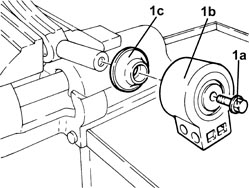

4410B52 FRONT SUSPENSION LOWER TRACK CONTROL ARM REAR BUSH LEFT OR RIGHT - REPLACE AT BENCH
- Path
- Procedures > 44 SUSPENSION AND WHEELS > 4410 FRONT SUSPENSION > 4410B FRONT SUSPENSION TRACK CONTROL ARMS > 4410B52 FRONT SUSPENSION LOWER TRACK CONTROL ARM REAR BUSH LEFT OR RIGHT - REPLACE AT BENCH
- Kind
- repair procedure (removal / refitting; the operation number is the code)
- Applies to
- all engines; all production periods
- Interactive page
- https://sloeber94.github.io/elrnDB-fCrm/en/#/194000542
Applies to: all engines; all production periods
 Removing
Removing
 Refitting
Refitting- Position the front suspension lower wishbone in a vice with protective jaws.
- Mark the fitting position of the rear bush in relation to the lower wishbone.
1. Unscrew bolt (1a) and remove rear bush (1b) and cup (1c).

Applies to: all engines; all production periods
Refitting
Removing- Move the marking from the fitting position of the old bush to the new bush to be fitted.
- Replace the cup and the new rear bush, respecting the installation position.
- Moisten the new bolt with locking compound and screw in without tightening.
- Remove the front suspension llower wishbone from the vice.